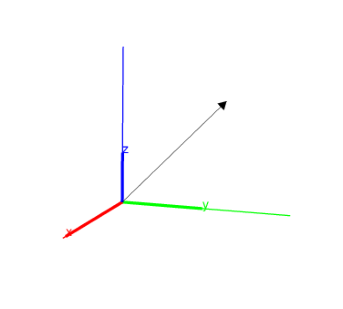
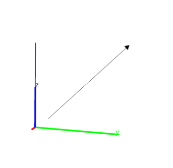
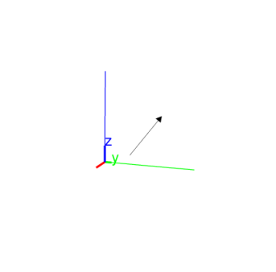

14.5.4 Vectors in space: vector
See Section 13.7.4 for vectors in the plane.
The vector command returns and draws vectors. It can takes
its arguments in different ways.
The coordinates of the vector.
-
vector takes one argument:
L, a list of the coordinates of the vector.
- vector(L) returns and draws the vector with the
given coordinates, starting from the origin.
Example
Input:
vector([1,2,3])
Output:

Two points or a point and a vector.
-
vector takes two arguments:
-
P, a point.
- Q, a point or a vector.
- vector(P,Q) returns and draws the
corresponding vector. If the arguments are two points, the vector
goes from P to Q. If the arguments are a point and a
vector, then the vector starts at P.
Examples
-
Input:
vector(point(-1,0,0),point(0,1,2))
or:
vector([-1,0,0],[0,1,2])
Output:

- Input:
| V:= vector([-1,0,0],[0,1,2]) |
| vector(point(-1,2,0),V)
|
Output:
